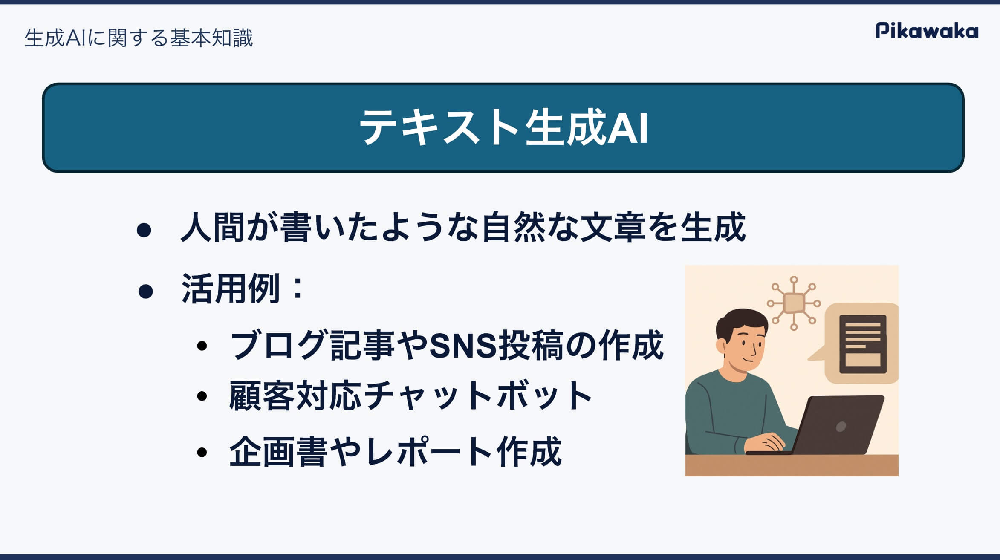
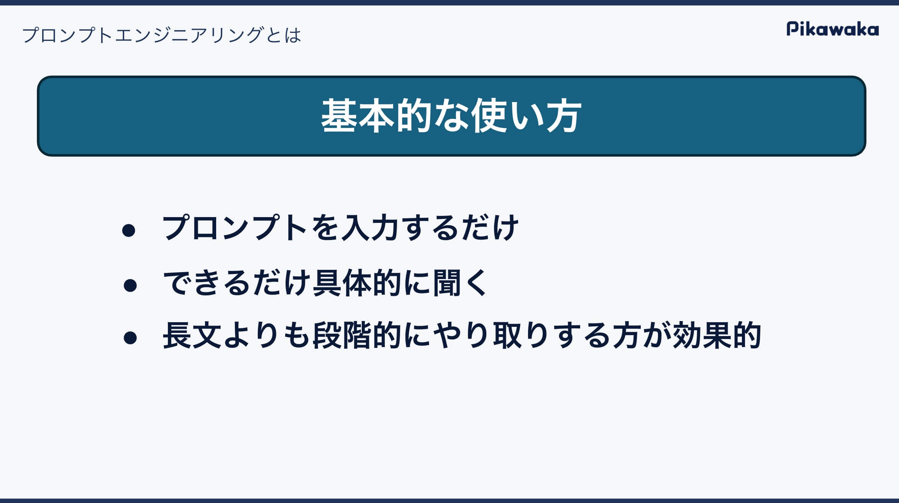
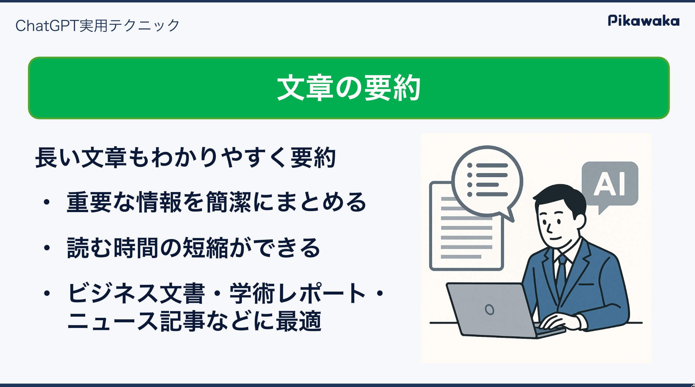

「生成AIで効率もクオリティもUP！実践ワークショップセミナー」を実施
弊社ではこの度、経済法令研究会様にて「生成AIで効率もクオリティもUP！実践ワークショップセミナー」を実施いたしました。本ワークショップでは、生成AIの基本的な使い方から、ビジネスへの応用の仕方について手を動かしながら学んでいただきました。
ワークショップの主な内容
このワークショップは、生成AIの基本的な使い方を学ぶことから始まり、実際に手を動かしながら以下の内容を学びました。
- 生成AIに関する基本知識
- ChatGPTに関する基本知識
- ビジネスシーンでの活用方法
- イラストの作成
- ChatGPT実用テクニック
- ChatGPTのカスタマイズ
- マインドマップ作成
- プレゼン用のスライド作成
以下が研修の主な内容です。
1. 生成AIに関する基本知識
初めて生成AIを触る方でも安心して学べるよう、生成AIの基本的な概念や仕組みについて解説しました。生成AIがどのように動作するのか、どのような場面で活用できるのかを理解していただきました。

2. ChatGPTに関する基本知識
ChatGPTの基本知識を学び、どのように活用できるかを理解しました。具体的には、ChatGPTの基本的な使い方を実際に手を動かしながら学んでいただきました。

ビジネスシーンでの活用方法
基本的な使い方を学んだ後は、ビジネスシーンでの活用方法について学びました。具体的には、以下の内容を実践しました。
- キャッチコピーの作成
- ビジネス書類の作成
- アジェンダの作成
- 業務手順の分解
- メールの作成
- 文章の校正
- 文章の要約
- プレゼンテーション資料の作成
- マインドマップの作成
これらの実践を通じて、初めて生成AIを触る方でも、ビジネスシーンでの活用方法を学ぶことができました。

実際に学べること
受講生は生成AIの基礎から、基本的な使い方を学びます。そして、実際の業務でどのように生成AIを活用できるかを実際に手を動かして体験していただきます。以下のような方を対象にしています。
- 今まで生成AIを使ったことがない方
- 使ったことはあるが、もっと効率よく使いたい方
- 実際の業務で生成AIを使い、業務効率化を図りたい方
- 社内に生成AIを導入したい方
初心者向けの内容になっているので、初めて生成AIを触る方でも安心して学べる内容となっています。
今後について
弊社では、生成AIの基礎知識と実践的なスキルを習得できる研修を提供しています。AIの力を取り入れることで、開発効率を高めたいとお考えの企業様にとって、実践的な学びを提供できる内容となっています。
セミナーでは、基礎から応用までを丁寧に解説し、受講後すぐに業務に役立てられる知識とスキルを習得していただけます。初めての方からより効果的に使いこなしたい方まで、幅広いニーズに対応しています。
生成AIの導入や活用についてお悩みの方は、ぜひお気軽にお問い合わせください。